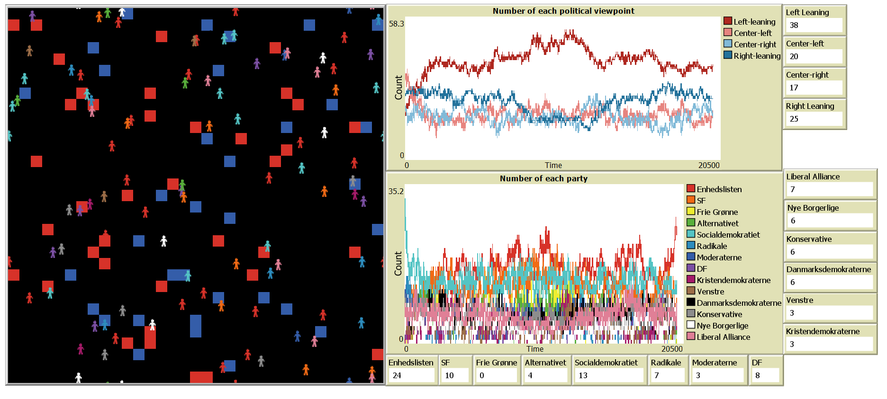
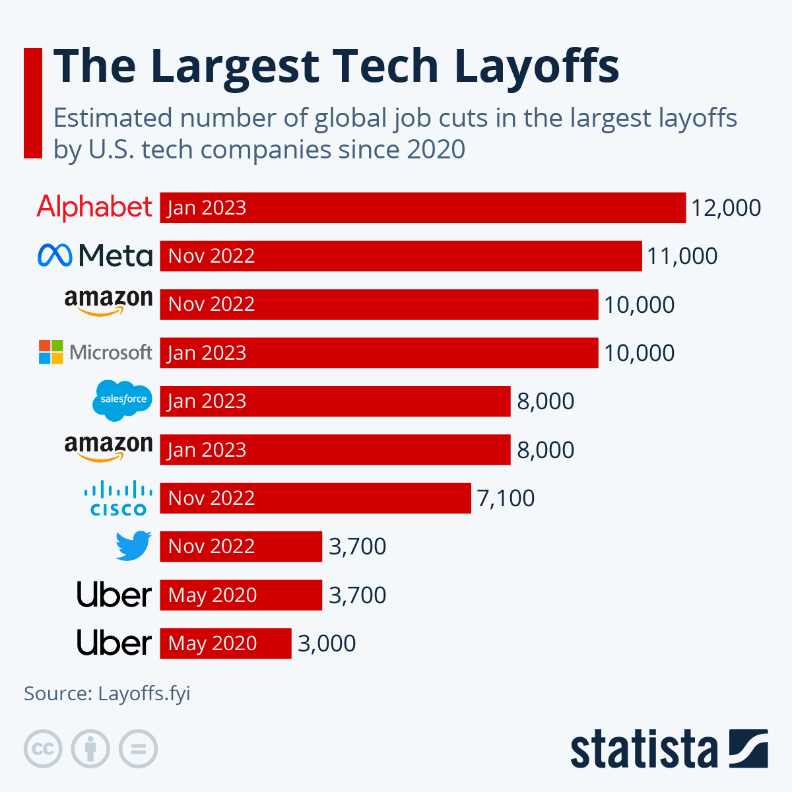
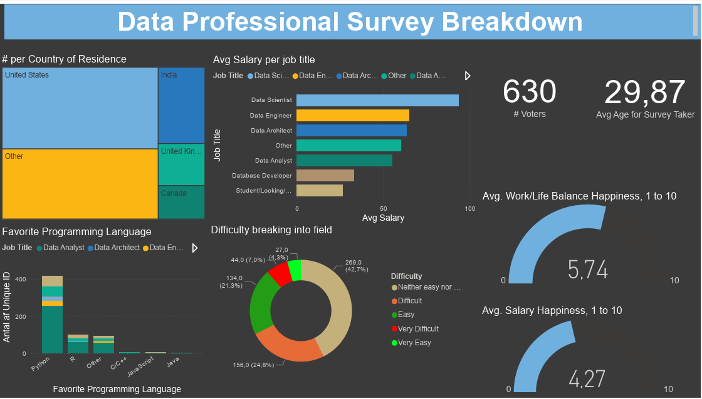

In this projected I developed an Agent-Based Model in NetLogo to simulate Danish voter behavior, incorporating demographic, social, and behavioral parameters. Conducted comprehensive statistical analyses in R to evaluate how lowering the voting age would influence electoral outcomes. Ultimately determining the voting patterns of Danish voters and the impact of changing the eligibility of voting based on age.


This showcases a collection of my published Tableau projects, including interactive dashboards that highlight my approach to data storytelling and visualization. One example is an AirBnB analysis in Seattle, Washington, where I visualized pricing trends, neighborhood patterns, availability distributions, and revenue to provide an intuitive, insight-driven overview of the local short-term rental market.
In this project I loaded, staged, and cleaned a large-scale dataset on layoffs in U.S. companies during the COVID-19 pandemic (March 2020–March 2023) using SQL Server. Standardized, implemented transformation logic, and resolved data quality issues to prepare the dataset for reliable analysis and reporting.

In this project I loaded the cleaned layoff dataset into SQL Server and conducted an in-depth exploratory analysis of U.S. company layoffs from March 2020 to March 2023. Identified trends, patterns, and anomalies through SQL querying, aggregation and ranking, providing an understanding of industry impacts, temporal shifts, and workforce dynamics during the pandemic.
In this projected I developed Agent-Based Models in both NetLogo and Python to simulate epistemic democratic processes, examining how individual knowledge, interaction patterns, and collective decision-making shape group outcomes. Complemented the modeling work with rigorous data analysis in Python, using statistical and visualization techniques to evaluate the conditions under which epistemic democracy may enhance decision quality and social welfare.

This project features a Power BI dashboard built to visualize insights from a survey of data professionals. The dashboard highlights key trends such as tool preferences, geographic distribution, career satisfaction, and diffculty breaking into the field, allowing users to explore the landscape of the data industry through clear, interactive visuals.

In this project, I wrote a Python script that automated the retrieval of cryptocurrency market data from the CoinMarketCap API, enabling efficient, repeatable data collection for analysis and reporting. Aiming to run data analysis on this in the future.